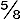

“It would be difficult to overrate the importance of a good repertoire of well-rehearsed pocket tricks.” Those words, written by Will Goldston, are as true today as when they first appeared more than a half century ago.
Pocket tricks are so called because they are performed with apparatus carried in the pocket. Routines with coins and bills are fundamental to pocket tricks. The magician who has mastered money magic will find it easy to apply his knowledge to many areas of close-up prestidigitation.
People are interested in money. The gyrations of the stock market are a topic of everyday conversation. Banks and investment houses advertise in daily newspapers. Television devotes nightly segments to money news. The magician who can perform a few tricks with coins and bills will have no trouble holding the attention of his audience. Current news stories about money matters suggest new and fresh ideas for presentation. Tie in a money trick to a story in the headlines and you will create immediate interest in the feat about to be performed.
Ingenious magical thinkers have developed a wide range of vivid magical effects with money: A trick like “Quick Print” (No. 5) allows you apparently to print a genuine $5 bill on blank paper; “Bunco Bills” (No. 70) takes the audience behind the scenes to expose the methods of the shortchange artist; “The Miser’s Dream” (No. 87) fulfills the dream of seemingly plucking money from thin air.
In some tricks it is required that paper money be cut or otherwise altered. It is a federal law that U.S. currency cannot be defaced. For tricks in which money is altered, use realistic play money of the kind available in toy and novelty stores.
It should be noted that, although the directions given here seem to imply that the magician is a man (the traditional manner for giving directions in magic), they are, of course, also intended to be used by women.
To help readers outside the United States perform the tricks described in this book, the following diagram indicates the size of the coins used. U.S. paper bills (of all denominations) measure 2″ × (6.6 × 15.5 cm).
For their generous assistance in the preparation of this book I would like to thank Howard Wurst, Jo Sarles, Sam Schwartz and artist Joseph K. Schmidt.
KARL FULVES
Fingers of the hand, as referred to in the text